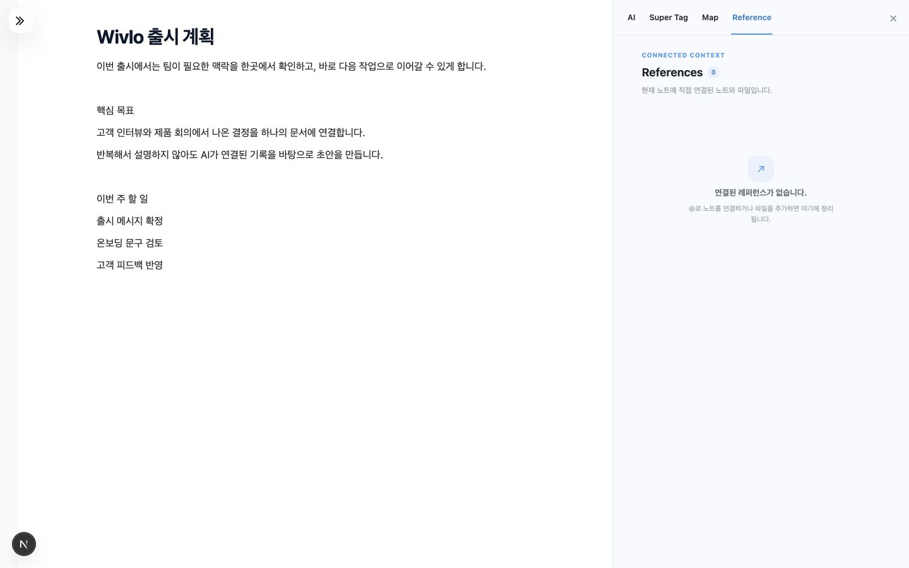
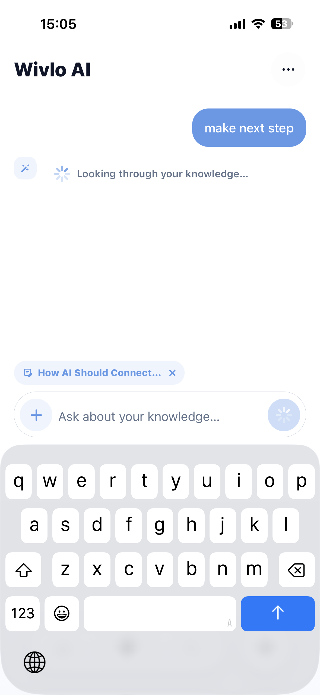

AI-native knowledge workspace
記録を参照し、AIで文書を編集する。
ノート、Reference、AI Action、AI ChatをEditorで使用できるknowledge workspaceです。WebとiOSのUX設計、UI、実装、リリースを担当しました。

@ Reference
/ AI Action
Editor is the center
Problem framing
保存した記録を、次の文書で再利用しにくい。
企画はNotion、調査はChatGPT、思いつきはApple Notes、資料はDriveに保存していました。次の文書を作る際は、各ツールを検索して内容をコピーする必要がありました。
Idea→Chat / Web→Notes / Notion→Forgotten→Search again
保存場所や正確なタイトルを思い出せない。
内容の一部だけを覚えている場合、キーワード検索を始めにくい。
必要な根拠が複数のツールに散らばる。
ノート、AI会話、資料を行き来するほど、作業中の文脈が途切れます。
見つけた情報を文書へ再入力する必要がある。
検索結果をコピーし、前提を説明してから文書に追加していました。
Product thesis
AIの出力を確認・編集できる文書として保存し、次の作業でも参照できるようにする。
01Capture before structure
整理を要求せず、思考を先に残せる。
02Context in Editor
ReferenceをEditorの隣に表示する。
03Inspectable AI
AIが何を知っているかをユーザーが確認できる。
04Artifacts, not answers
結果を会話に閉じず、次も使える文書にする。
Text / Image / Voice
Tag / Project / Memory
Search / @ Reference
AI Action / Chat
Editable note
Key UX decision
@で参照範囲を指定し、/でAI処理を選択する。
@ は「AIが何を知るか」、/ は「AIが何をするか」を決めます。context selectionとtransformationを分けることで、Editorの主導権をユーザーに残しました。
Editor | Chat
常設Chatが視線と画面を占有し、AIとの対話が中心になる。
Prompt → Document
生成は速いが、ユーザーがAI出力のレビュー役になる。
@ Context + / Action
AIの知識と行動を分け、Editorの中で必要な瞬間だけ接続する。
@ /
@ Reference
選択した記録を、編集中の文書にReferenceとして追加する。
ユーザーがノートをReferenceとして選択し、Editorの隣で原文を確認できるようにしました。AI Actionは選択されたReferenceを参照します。
- 参照範囲をユーザーが決める
- 原文へ戻れる導線を残す
- AI結果を編集可能なブロックにする

Designing the AI logic
ユーザーが選ぶ文脈と、システムが検索する文脈を分ける。
すべてのノートを毎回送るのではなく、ユーザーが選ぶcontextとシステムが探すcontextの役割を分けました。タスク別に候補を組み立て、数と文字量に上限を置くことで、信頼・速度・コストを同じUX問題として扱いました。
Input
↓
Current draft@ ReferencesUser prompt
Context policy
↓
Feature-specific retrievalRankingContext limit
Max 12 notes · 2,600 chars / note · 12,000 chars totalProcessing
↓
Deterministic signalsEmbedding / RetrievalLLM
Output
AnswerSourcesEditable block
更新日時、頻度、tag、connectionなどの明確な行動シグナル。
自然言語検索、関連ノート、memory metadata、semantic similarity。
要約、文章改善、質問解釈、構造化、writing assistance。
AI Agent / Interaction redesign
AI Agentを常時表示し、文書の変更後に提案を出す。
一般的な文書AIは、ユーザーがボタンを探し、パネルを開き、指示して初めて動きます。WivloではAgentを初期表示し、文書の変化量をきっかけに、今必要な支援を先回りして提示する設計に変えました。
Before / Passive AIOpen → Ask → Wait
機能の存在を覚え、作業を止めて、毎回AIを起動する必要がある。
Wivlo / Proactive AgentObserve → Suggest → Apply
Agentは常に見える位置にあり、書く行為を止めずに次の一手と過去の記録を示す。
文書の変更量をトリガーにする
一定の変更量に達した時点で文書を読み、next stepと関連する過去ノートを提示します。
Suggestion
編集後に要約、tag候補、関連文書を作成する
編集が落ち着いた後に、3種類の候補をまとめて表示します。
SummaryTagsRelated notes
Design guardrail Agentは提案までを担い、文書を自動で上書きしない。採用する内容とタイミングはユーザーが決めます。
Branch & Document Links
BranchとDocument Linkを別の関係として保存する。
すべてを同じlinkとして扱うと、なぜ二つの文書がつながったのかが失われます。Wivloでは、思考の派生を残すBranchと、文書同士を参照するLinkを別の操作として設計しました。
選択した段落と、その時点の文脈
Selected passageBranch
通常のノートとして編集を続ける
選択範囲からBranch noteを作成
起点ノート、原文snapshot、section情報を保存します。
明示的な参照関係
別々の文書を直接つなぎ、必要な記録へ戻る経路をEditor内に残します。
OriginとBranchesを両側に表示
派生先では起点を、親ノートでは派生一覧を確認でき、移動しても出発点を失いません。
One product, two contexts
Mobileで記録し、Desktopで編集・参照する。
MobileにはQuick capture、音声メモ、検索を配置し、Desktopには長文Editor、複数Reference、AI Actionを配置しました。
Write · Compare · Reuse
長文Editor、複数Reference、反復的なAI Action。
Text · Voice · Search
Quick capture、音声メモと文字起こし、自然言語検索。


From design to production
設計した機能をWebとiOSに実装し、リリースした。
AI-assisted developmentを使い、問題定義、UX/UI、AI logic、実装、QA、配信後の改善を一つのループとして担当しました。広いproductivity suiteから始め、実装を通じて「contextを複利化するEditor」へproduct thesisを絞り込みました。
Problem→Strategy→UX / UI→AI Logic→Build→QA→Ship
Next.jsReactExpoSupabaseOpenAIVercelApp Store
Shipped, not projected
実装・リリースした機能を成果として整理する。
公開できる利用指標はないため、現在動作しているWeb・iOS機能と実装範囲を記載しています。
認証、Editor、Search、Reference、AI workflowを運用。
Mobile capture、AI Chat、Search、voice workflowを配信。
Reference、memory、related notes、source-backed outputを接続。
設計判断をproduction code、QA、deploymentまで継続。
AI機能では、参照する情報、ユーザーの選択範囲、出力の保存方法を一つの操作フローとして設計する必要がある。
Scope note — 公開ユーザー数やretentionは未掲載。2026年8月時点で実装・公開済みの範囲のみを記載しています。